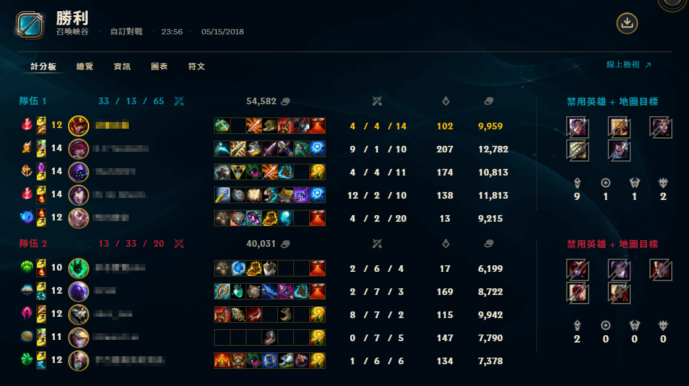
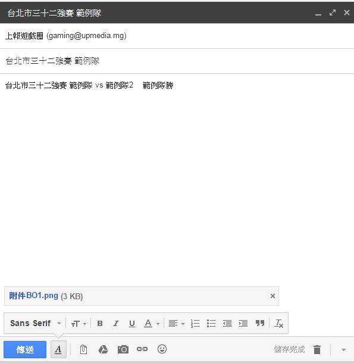

— 2019 ECS 春季公開賽 —
主辦單位
共同主辦
技術協辦
主辦單位
共同主辦
技術協辦
提醒！在網站完成線上報名後，玩家填寫的電子信箱將會依序收到官方單位寄出的資料確認信，請在收到信件確認資料無誤後回傳【填寫資料經本人確認無誤】，以完成報名手續。
本次比賽分為三個階段：六都預選賽、六都總決賽-小組賽、六都總決賽-淘汰賽。
賽事將分為線上及線下賽兩部份，各都的三十二隻參賽隊伍將透過單淘汰賽遴選出乙隊為該都代表隊。各都決賽將於指定線下賽場地舉行，勝出者將代表該都市參與下一階段的六都總決賽。
(隊伍名單7/5公布 如有提前額滿則可能提前公布)
各都線上賽事請勝方隊長須於比賽當天23:59前將賽果(勝利截圖)傳至信箱 gaming@upmedia.mg ，賽事官方將於午夜1:00於官方網站更新賽程表，並寄送對戰雙方隊長資訊於雙方信箱，若未能在時間內傳送賽果將喪失比賽資格。
截圖範例：
信件範例：
標題：XX市XX強賽 XX隊
附件：請附上勝利截圖，若是BO3則截取兩次勝利之截圖。
線上賽事之轉播由官方指定轉播場次，需配合官方進行轉播，選中之隊伍依官方排定 16:00一組、18:30一組 (若前場超過時間則結束後接續)。
來自6都的各都冠軍隊將於8/20~8/23日進行小組單循環賽（即各都之間都需交手一次），最終將根據各都冠軍隊的戰績決定他們在第三階段淘汰賽的位置。(若勝場一樣且形成互咬以最快獲勝遊戲時間決定排名。)
線上賽事之轉播由官方指定轉播場次，需配合官方進行轉播，選中之隊伍將於8/20 ~ 8/23依官方排定時程於 19:00 ~ 22:00之賽事出場。 (若前場超過時間則結束後接續)。

淘汰賽將根據小組賽的排名，決定各都冠軍隊的種子序，第3、4、5、6種子將透過淘汰賽（賽制為BO3）選出ㄧ隊勝者，於次日對決第2種子（賽制為BO3），最後勝隊將與第1種子進行BO5的冠軍戰。
注意事項：
如有其他疑問或建議可私訊【上報遊戲日常】臉書粉絲專頁或來信【gaming@upmedia.mg】